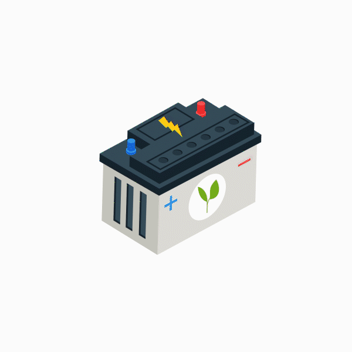

Government & Public Institutions
ICT products and services for ministries, authorities, commissions, universities, hospitals, and public service organizations.
DCL's market includes government, NGOs, public and private companies, schools, hospitals, financial service organizations, and individual consumers.
Market segments
ICT products and services for ministries, authorities, commissions, universities, hospitals, and public service organizations.
Technology supply and support for nonprofit and social research organizations with operational ICT needs.
Hardware, software, networking, maintenance, and support services for businesses and individual consumers.
Clients
Customer promise
DCL aims to be recognized by customers as a strategic IT partner supplying technically superior, innovative, high-quality services and products.
DCL is committed to providing system solutions on time, within budget, and in line with accepted quality control processes.
DCL keeps abreast of technology trends and continuously improves its product and service range through partners and internal skills development.
Product ecosystem
Personal computers, laptops, servers, printers, scanners, display devices, infrastructure management software, and services.
Start Inquiry
PowerUPSs, voltage regulators, line stabilizers, extension cables, and related power support technologies.
Start InquiryEnterprise data, voice, and video over LAN and WAN, plus cost-effective networking solutions for SME environments.
Start Inquiry